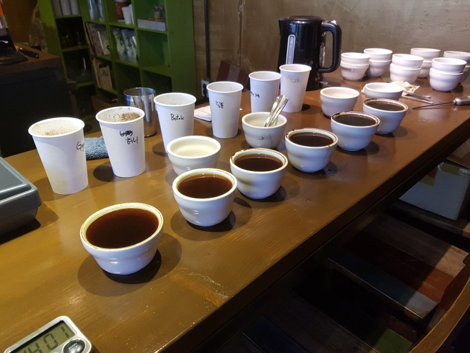
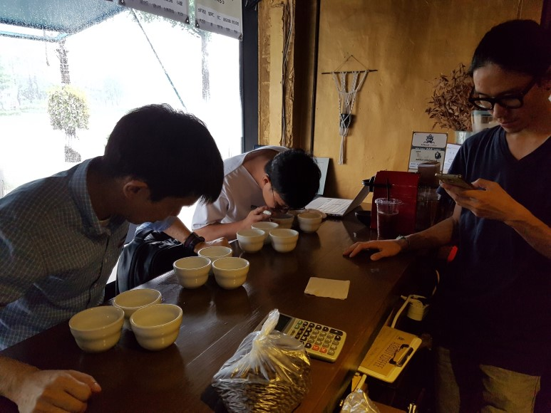
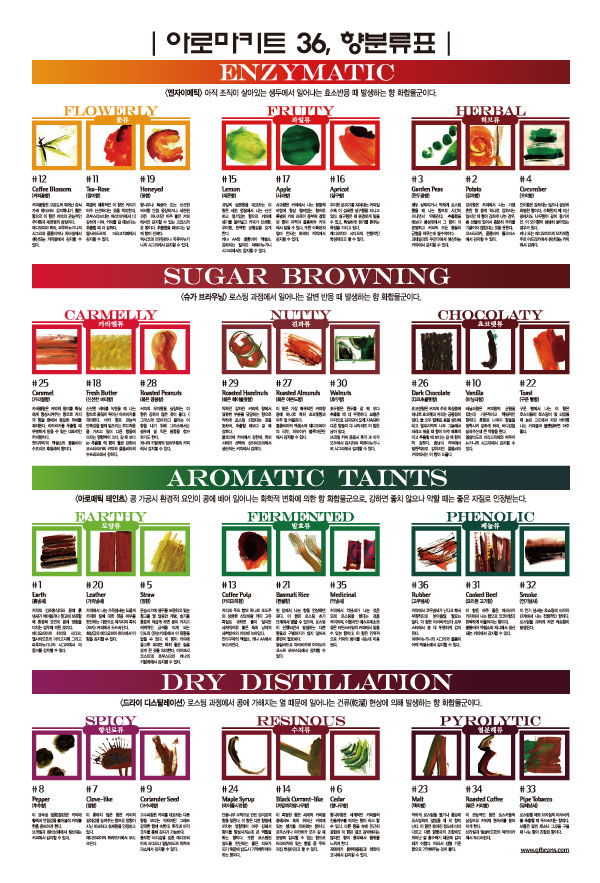
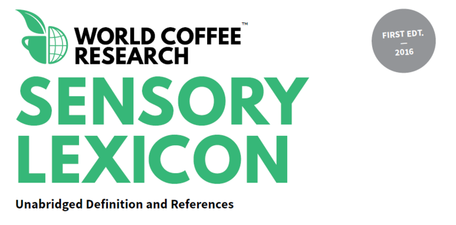
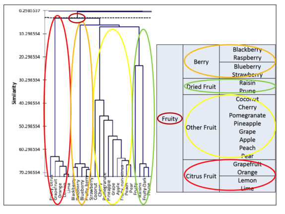
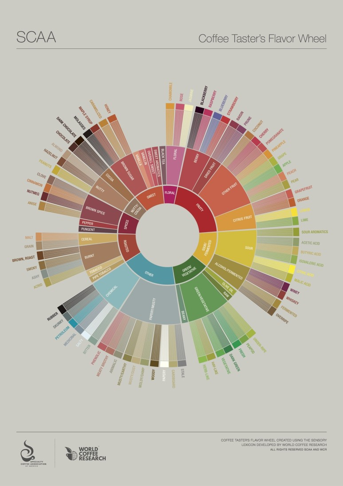

2017-08-27 by A3bout Coffee
우리는 커피를 평가하는 방식을 놓고 여러 가지를 고민해 보고 있습니다. 그중 가장 과학적이고 체계적인 방식은 커핑일 일 것입니다. 커핑은 일정한 프로토콜(약속)을 정해 놓고 커피를 시음하는 행위입니다.


커피를 평가하는 행위는 일정한 행동 패턴이 있습니다. 이러한 이유는 커피를 평가하는데 있어서 최대한 과학적 시음을 해야 하기 때문입니다. 커피를 시음하는 행위는 취향이지만 커피를 평가하는 방식은 취향이 되어선 안되기 때문입니다. 과학 철학에선 이러한 행위를 간주관적이라고 표현합니다. 커피는 주관이지만 주관에 기반을 둔 객관을 보장받아야 하기 때문입니다.
이러한 사실을 놓고 보면 커피를 평가하 방식은 현상을 해석하는 일에 가깝습니다. 시음을 한 후 각자 어떻게 이야기를 하느냐가 중요한 것입니다. 이 때 나오는 표현 중 커피의 표현은 머릿속으로 떠올리는 본성 자극을 어떻게 이야기하느냐가 중요합니다. 이러한 일들을 바탕으로 커피는 현재까지 커피를 표현할 여러 가지 도구들이 개발되게 되기에 이릅니다.

하지만 이러한 향을 익히더라도 커피 표현이 어려운 이유는 우리의 언어 안에 내재하고 있습니다. 많은 단어들이 시각, 청각, 그리고 촉각에 대한 감각을 설명하지만 유독 냄새와 맛의 감각을 설명하는 단어는 적기 때문입니다. 또한 향의 언어는 향, 악취, 냄새, 향기, 맛, 풍미 그리고 바디 같은 관련 단어의 오용 때문에 더 복잡하고 커피 대화와 글쓰기의 무차별적으로 적용되고 있는 실정입니다. 이러한 실정에서 월드 커피 리서치에서 커피 맛 관련 사전을 편찬하기에 이릅니다.

- 참고 : Sensory Lexicon
이 사전은 통계학과 인간의 언어 분류를 응용하여 표현한 방식으로 커피 커퍼들이 주로 사용하는 언어를 분류해 그들이 자주 사용하는 언어를 표현한 방식입니다.

이렇게 완성된 것이 SCAA의 새로운 플레이버 휠의 탄생입니다.

과연 우리는 어떻게 커피를 설명하고 있을까요? 우리가 표현하는 방식이 과연 옳은 방식일까요?
우리도 이러한 약속된 커피 플레이버 휠을 갖기 위해선 커피 언어를 사용할 사람들과 함께 해야 합니다. 커피 화학자, 화학 공학자, 식품 기술자, 생두 재배자, 수입자, 커피 중개 거래인, 커피 바이어, 커피 로스터, 바리스타, 커피를 좋아하는
사람, 일반인등 모두 커피를 표현할 모든 사람들이 필요로 하게 됩니다.
아무래도 커피 표현의 문제를 다뤄야 할 곳은 업계 사람들과 함께 먹는 커피일 것입니다. 커피를 시음하는 몇 명의 사람들이 공통적으로 말하는 그 무엇들, 그들이 공통적으로 체험하는 커피의 풍미에 적절한 단어의 합의를 시작할 수 있을 것입니다. 이러한 합의는 향, 맛, 느낌의 순서로 이어지는 효과적인 커피 커뮤니티가 완성되며 이러한 결과물로 커피를 상품 또는 블렌딩 제품으로 만드는 여러 회사들의 독특한 풍미에 개별적인 기여를 할 수 있을 것이라 저희는 생각하고 있습니다. 우리는 좋은 커피, 좋은 블렌딩 커피를 선전하기 위해서는 각각의 커피를 묘사할 수 있는 언어를 발견해야 하는 사명을 갖고 있습니다. 이렇게 발견된 새로운 언어들이 우리의 커피 산업을 더욱더 발전시킬 것이라 생각하고 있습니다.